A collection of ink drawing series involving plants.
vancouver island mushrooms
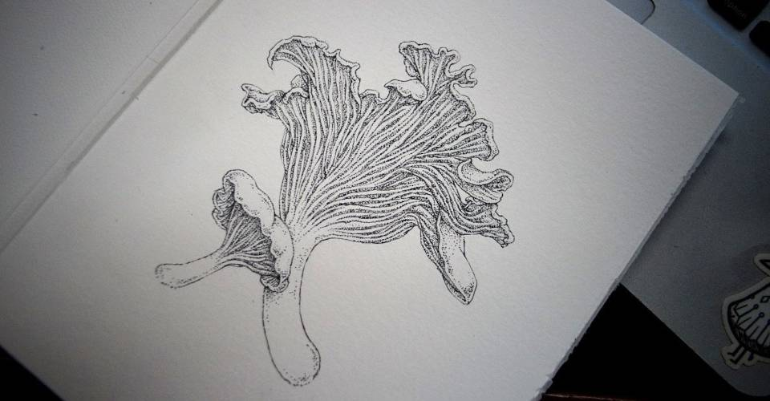
British Columbia is home to many wonderful mushrooms. Vancouver Island in particular, is a great location for learning about and foraging mushrooms. I made this series to learn about local varieties, and also because I love getting lost into their details.
The series is currently up for sale in my store.
Each drawing are 148x210mm (6x8inches) ink drawings on 300gsm textured paper.
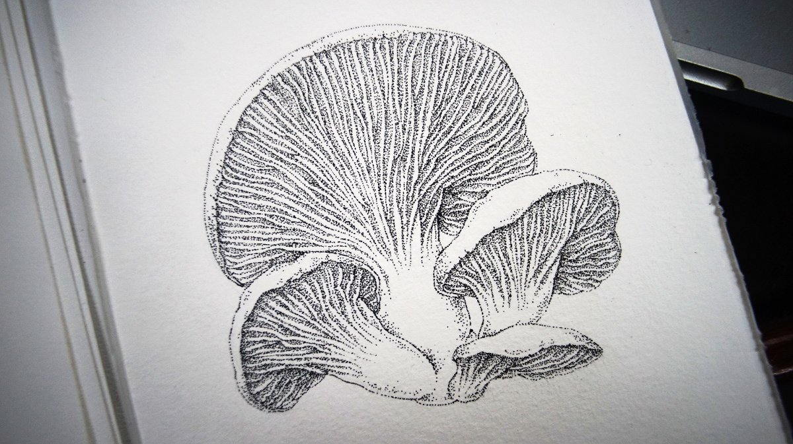
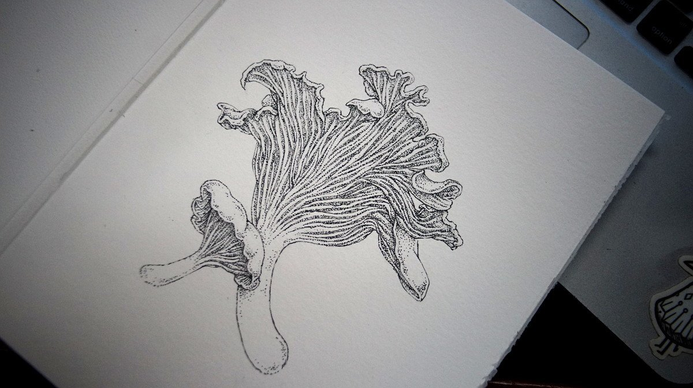
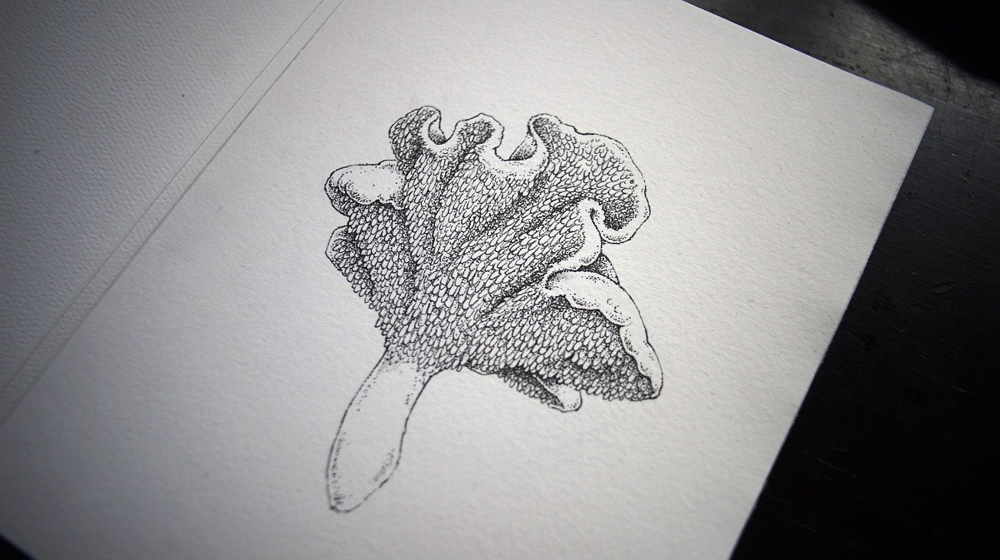
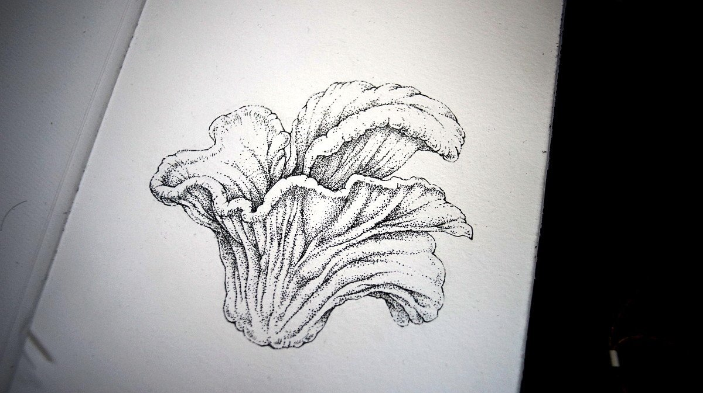
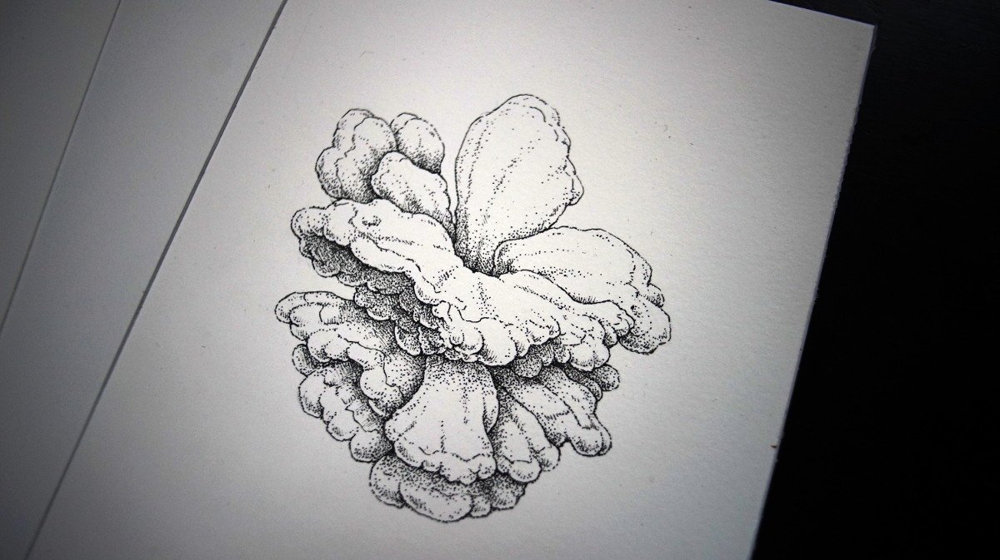
fasciation
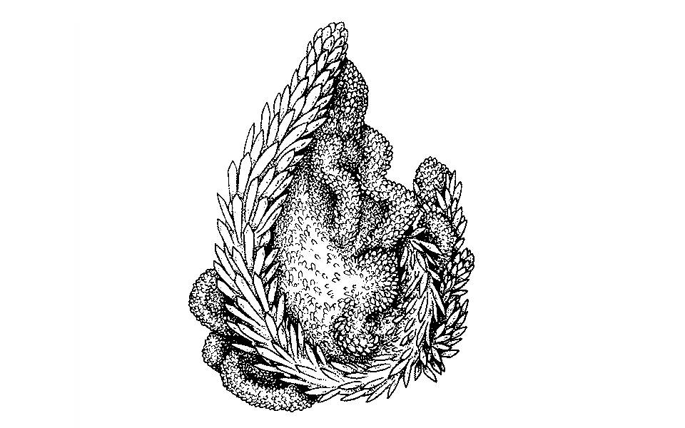
Fasciation is a rare condition of abnormal growth in plants. It causes the plant to become elongated perpendicularly to the direction of growth, thus producing flattened, ribbon-like, crested or elaborately contorted, tissue. It can also cause the plant to increase in weight and volume. Any occurrence of fasciation has several possible causes, including hormonal, genetic, bacterial, fungal, viral and environmental causes.
I'm making this series to showcase these wonderful oddities. 148x210mm (6x8inches) ink drawings. All drawings were sold.
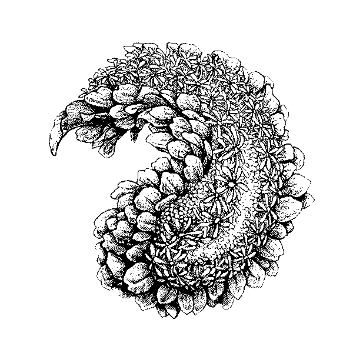
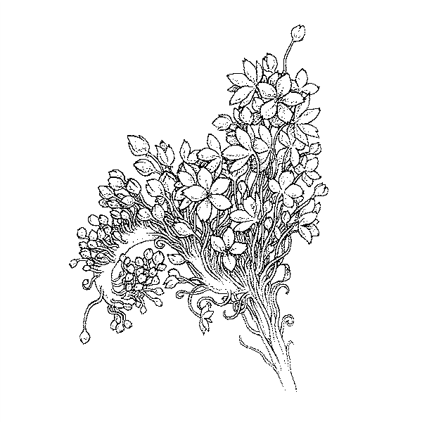
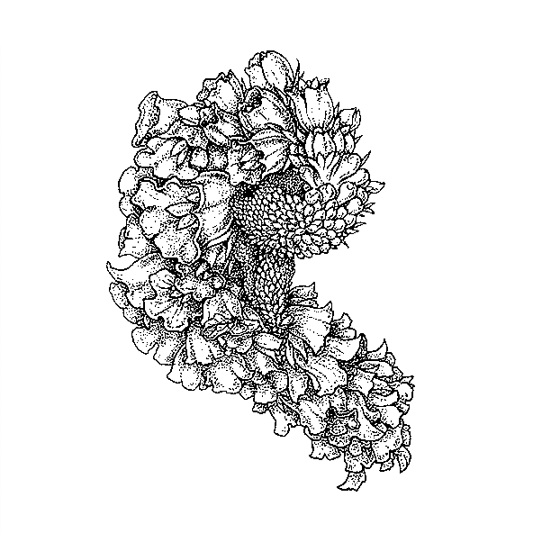
Other illustrations
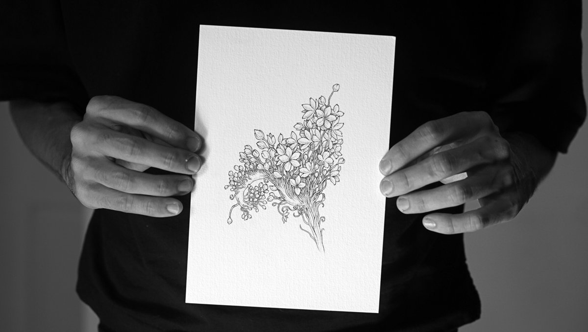
- Rudbeckia Hirta[165.6 KB]
- Oleria Nummulariifolia[106.8 KB]
- Veronicastrum Virginicum[291.4 KB]
- Odontonema Cuspidatum[132.8 KB]
fungi
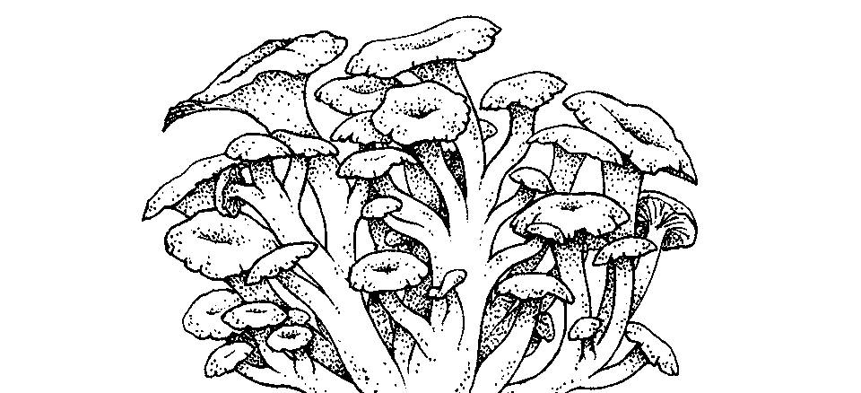
Mushrooms come in a variety of shapes and sizes; attracted by their other-wordliness, I have started a fungi illustration series.
148x210mm (6x8inches) ink drawings on watercolour paper. All of the originals of this series found good homes. Ask for a commission.
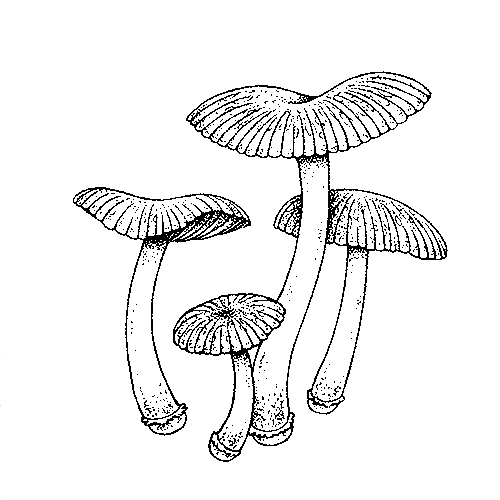
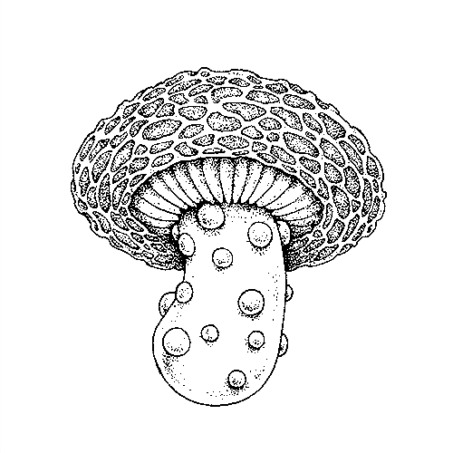
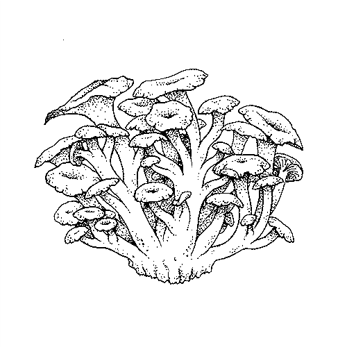
Other illustrations
- Shiitake[147.6 KB]
- Ramaria Rubricarnata[205.8 KB]
- Psilocybe Mexicana[136.8 KB]
- Psilocybe Mexicana II[108.9 KB]
- Pleurotus Columbinus[178.6 KB]
- Morchella Rufobrunnea[149.6 KB]
- Coprinopsis Atramentaria[194.8 KB]
- Cantharellus Ciberius[175.6 KB]
- Buna Shimeji[167.3 KB]
- Amanita Muscaria[196.3 KB]
- Favolaschia Calocera[219.8 KB]
- Marasmius Haematocephalus[100.4 KB]
- Ophiocordyceps unilateralis[127.3 KB]
ginger roots
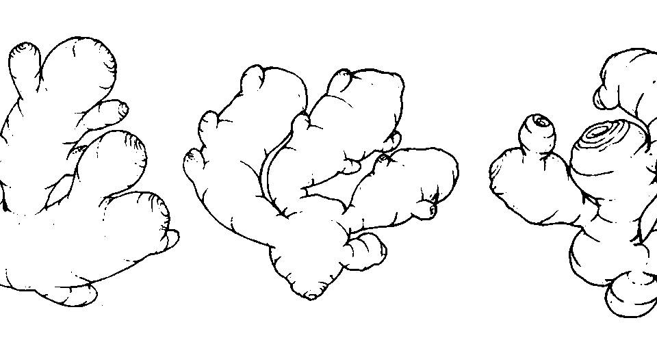
6X6inch (152x152mm) ink drawings on watercolour paper. Completed in 2015.
Every ginger is unique. My love of the shape and taste of this rhizome has inspired this drawing series. I am happy to say that all of these drawings have found good homes.
Last 3 photos are of a ginger block print I made. I would stamp that image on the gingers I sold off.
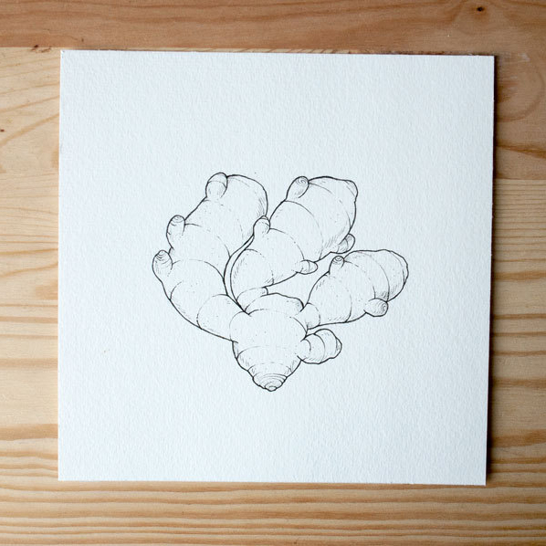
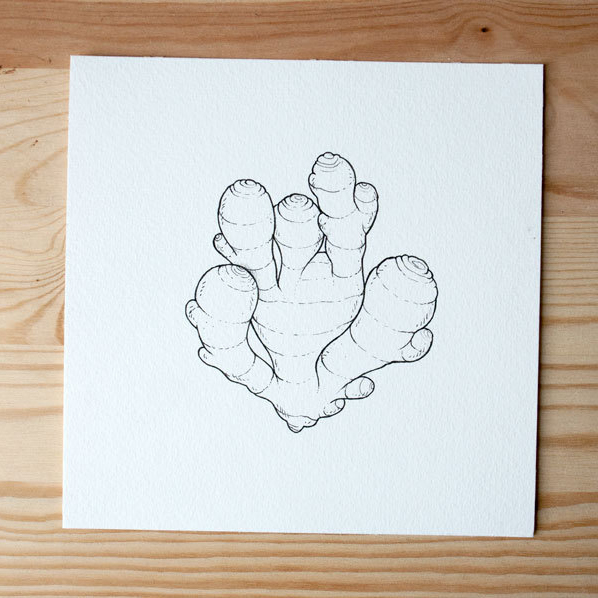
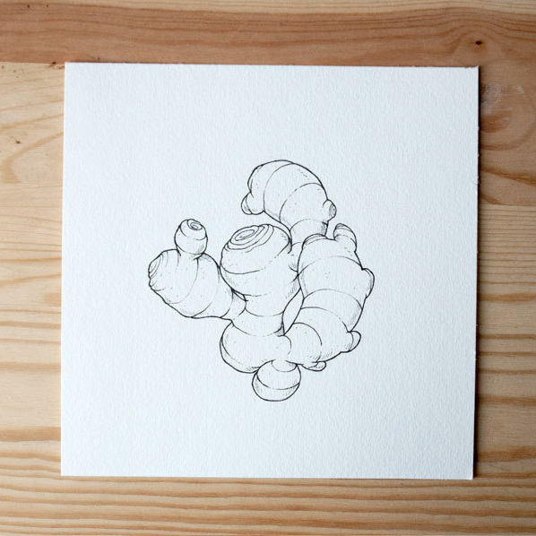
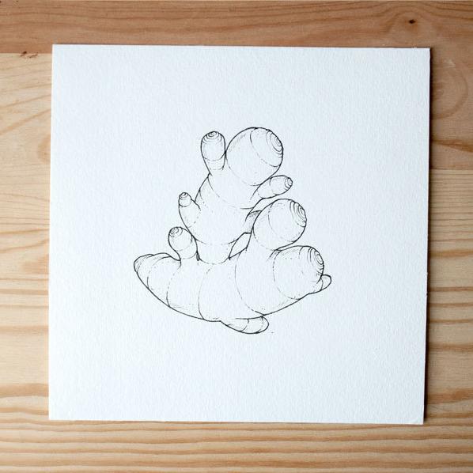
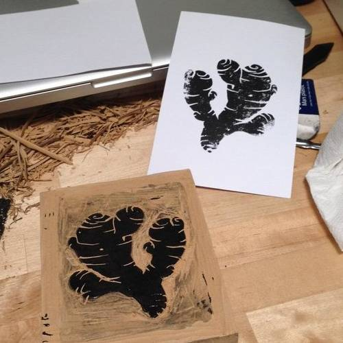